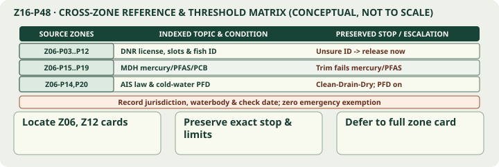

Z16-P48 · Field reference atlas · New manuscript
Minnesota Angling, MDH Fish Advisories and AIS Compliance Index
Locate the original encyclopedia cards for minnesota Angling, MDH Fish Advisories and AIS Compliance Index.
When it applies · Offline reference lookup. The linked chapter defines the situation, audience and limits.
Equipment · Offline reader or the complete linked source cards in print.

Actions
- Open Z06-P04 for minnesota Fishing Licenses, Seasons and Special Waterbody Rules; Z06-P06 for border Waters, Tribal Jurisdictions and Private-Land Permission.[A10, H01]
- Open Z06-P14 for aquatic Invasive Species: Clean, Drain, Dry and Bait Disposal Law; Z06-P15 for checking Minnesota Department of Health Waterbody Fish Advisories.[A10, H07, H04]
- Read the linked card’s applicability, equipment and stop conditions together. Keep review and source limitations attached to any excerpt.[A10, ED]
Failure recognition · Acting on a keyword or title while overlooking an upstream exception or stop condition.[A10, ED]
Verify · Confirm the exact page ID and read the full conditions before using the reference.[A10, ED]
Stop or change course · If the situation falls outside a linked card’s conditions or its stop rule applies, stop using this index as a decision aid. Follow the full card and current local directions.[A10, ED]
Evidence and editorial notes
- A10 · FEMA / Ready.gov · Make a Plan (current web edition)
- Section: Offline reader navigation, historical lineage, and HOLD transparency · Conditions: Using the complete 16-zone offline archive, zone readers, and print proofs
Support: Navigation aids expose draft status, reconstruction lineage, open diagnostic photo needs, and pending specialist holds on every lookup path.
Limitations: This index entry does not independently establish any safety, regulatory or diagnostic instruction. · Conflicting evidence: None noted.
Editorial note: Index design and cross-reference policy. Substantive directions come from linked upstream chapter claims. · Specialist reviewer: Accessibility, print QA, and editorial reviewer
Primary source · checked 2026-11-24 - H01 · Minnesota DNR · Minnesota Fishing Regulations (Current web edition)
- Section: Licensing, seasons, limits, and waterbody-specific rules · Conditions: Minnesota angling across inland, border, and designated waters
Support: Anglers must hold a valid license unless explicitly exempt and verify current season dates, possession limits, size slots, and special waterbody rules before fishing.
Limitations: Regulations change annually and differ on border waters, trout streams, and tribal/ceded territories; no emergency creates an automatic legal exemption. · Conflicting evidence: None noted.
Editorial note: Establishes Z06 fishing authority gate. · Specialist reviewer: Minnesota DNR fisheries and legal reviewer
Primary source · checked 2026-11-25 - H04 · Minnesota Dept. of Health · Fish Consumption Guidance and Waterbody Advisories (Current web edition)
- Section: Waterbody-specific fish consumption advisories (mercury, PFAS, PCBs) · Conditions: Consuming Minnesota caught freshwater fish
Support: MDH issues species-, size-, and waterbody-specific meal-frequency limits for mercury, PCBs, and PFAS, with stricter limits for pregnant/nursing people and children under 15.
Limitations: Visual fish health and water clarity cannot detect mercury, PFAS, or PCBs; check current MDH waterbody lookup before eating caught fish. · Conflicting evidence: None noted.
Editorial note: Mandatory Z06 public-health fish advisory gate. · Specialist reviewer: Public-health toxicologist and MDH reviewer
Primary source · checked 2026-11-25 - H07 · Minnesota DNR · Aquatic Invasive Species Laws and Clean-Drain-Dry Rules (Current web edition)
- Section: Clean, Drain, Dry aquatic invasive species law · Conditions: Moving watercraft, angling gear, waders, or bait between waterbodies
Support: Minnesota law requires cleaning aquatic plants/zebra mussels from gear, draining all water with plugs removed, and disposing of unwanted bait in trash.
Limitations: Never transport live fish or lake water away from infested waters except under explicit statutory permit. · Conflicting evidence: None noted.
Editorial note: Mandatory Z06 conservation/AIS compliance. · Specialist reviewer: Aquatic invasive species specialist
Primary source · checked 2026-11-25
Source lineage · New manuscript (Z16 P20 harvest index) · Classification · New manuscript.